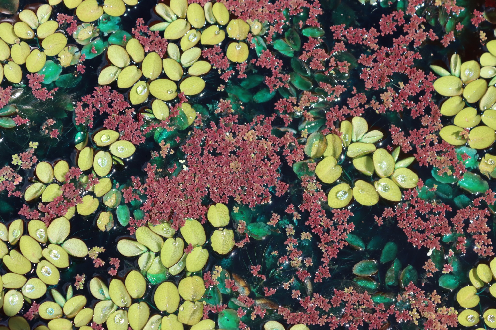
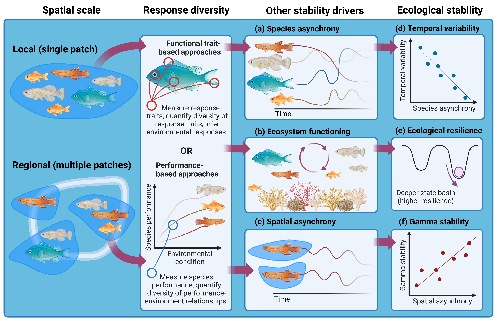
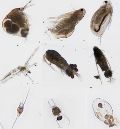
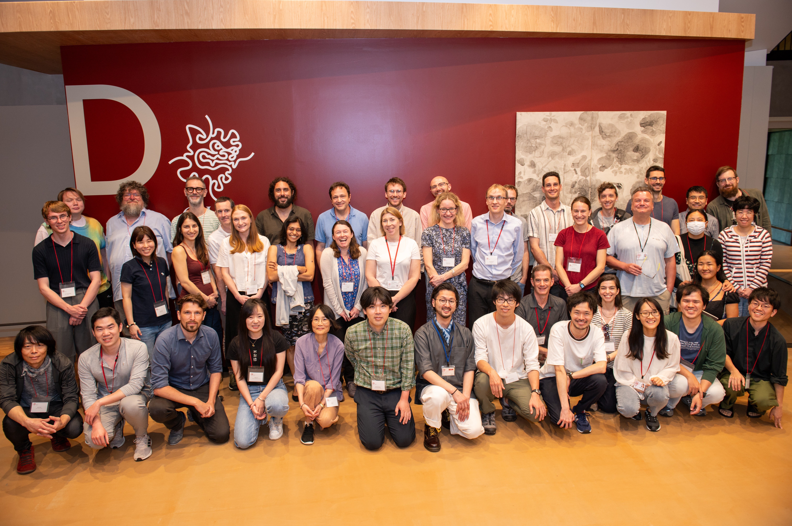
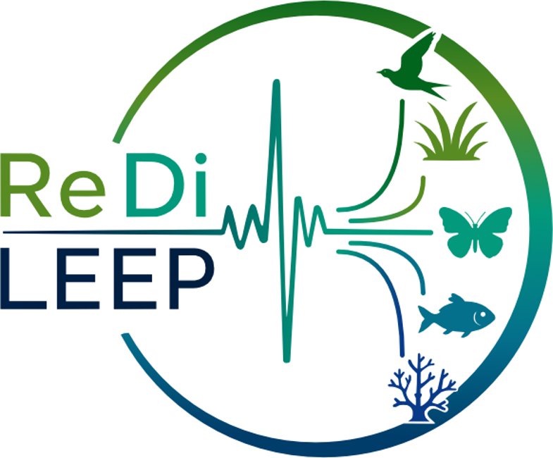
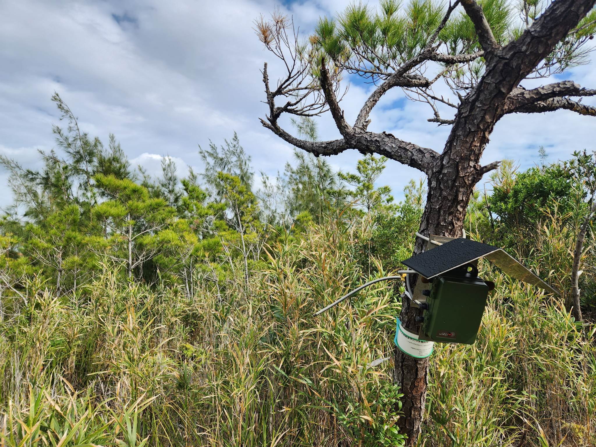
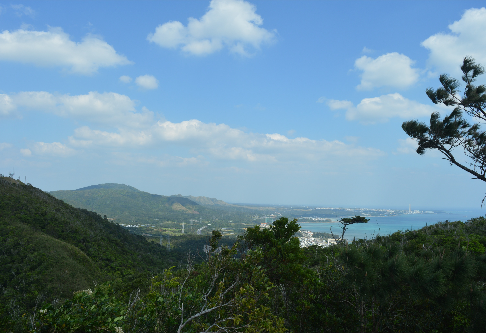
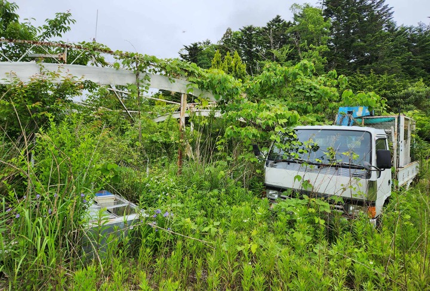
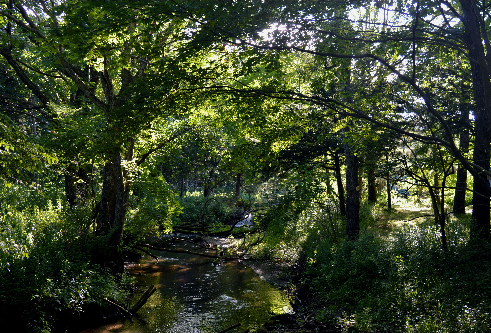

Research
Ecosystems are increasingly exposed to climate change, land-use intensification, invasive species, and other human pressures. Understanding why some ecosystems resist and recover from these changes, while others undergo dramatic or lasting changes, is a central challenge in ecology.
Biodiversity is often associated with more stable ecosystems, but the biological mechanisms behind this relationship remain incompletely understood. At the same time, much of our understanding of stability comes from a relatively narrow range of experimental systems, leaving us with limited ways to measure stability in complex real-world ecosystems.
My research addresses these challenges from two complementary directions: by developing scalable concepts and methods for understanding the biological drivers of stability, particularly response diversity; and by using high-resolution ecoacoustic data to measure stability, change, and recovery in natural systems.
生態系レジリエンスのより深い理解を目指して
Response diversity
Predicting ecological stability from species responses to environmental change
応答多様性 ｜ 生態系の安定性を予測するための新たな概念と手法

Biodiversity can promote ecological stability, but simply knowing which species are present tells us relatively little about why. Response diversity offers a possible mechanism: it describes variation among organisms in how they respond to environmental change.
When species respond differently to the same environmental pressures, declines in some species can be offset by increases or persistence of others. My research asks how we can measure this variation, when response diversity predicts ecological stability (and when it doesn’t), and how this knowledge might ultimately help us understand and manage ecosystems in a changing world.

Testing concepts and methods
A major strand of my research develops and tests ways to define, quantify, and interpret response diversity (e.g., Ross et al. 2023, Methods Ecol. Evol.). I am particularly interested in when response diversity can help us understand or predict ecological stability, and how it relates to other aspects of biodiversity, functioning, and service provision.

Applying across study systems
My work is deliberately system-agnostic. I have studied response diversity in systems ranging from European farmland birds (White et al. 2023, J. Anim. Ecol.) to free-floating aquatic plants (Ross et al. 2026, bioRxiv), asking which relationships between biodiversity, response diversity, and stability generalise across ecosystems.

Community-led synthesis
As Deputy Chair of the Response Diversity Network I aim to bring together people interested in how species’ responses affect stability (Ross et al. 2026, Oikos). Through workshops and collaborative research, we are creating conceptual and methodological consensus to make response diversity applicable for ecosystem management.
I am part of the EU-funded MSCA Doctoral Network ReDiLEEP: Using science-driven Response Diversity Knowledge to Leverage Efficient Ecosystem Preservation and Restoration. Please see our website for more information on ReDiLEEP vacancies, activities, and outputs.

Ecoacoustics
High-resolution ecological data for understanding dynamics, stability, and change
生態音響学 ｜ 生態系の安定性・回復・変化を理解するための生態学的ビッグデータ

If a tree falls in the forest, and no one is around to hear it, does it make a sound? Ecosystems are far from silent; animals, weather, and human activities together create complex soundscapes that change through time with biotic and abiotic environmental changes.
Passive acoustic monitoring allows us to record these soundscapes autonomously at large spatial and temporal scales. My research uses the high-resolution ecological data generated from acoustic sensor networks to study dynamics, stability, and ecological change in real-world ecosystems. I combine information about individual vocalising species with community- and soundscape-level summaries.

Okinawa | 沖縄
In Okinawa, we’ve been recording soundscapes for 10 years. I use this long-term acoustic data to ask how land development and major disturbances such as typhoons shape species and soundscape dynamics through time (e.g. Ross et al. 2024, Glob. Chang. Biol.).

Fukushima | 福島
In Fukushima, complete abandonment of settlements following the 2011 nuclear disaster provides an unusual opportunity to investigate how human presence — and absence — structures ecological communities and soundscapes.

Hokkaido | 北海道
In Hokkaido, I will build on our previous work in Horonai stream (Ross et al. 2022, Glob. Chang. Biol.) to experimentally measure the responses of ecosystem processes and soundscapes to disturbances such as noise pollution and heatwaves.
This work is supported by a JST 創発 (FOREST) grant: ⾳響解析による⽣態系レジリエンス解明 | Elucidating the drivers of ecosystem resilience through acoustic analysis.